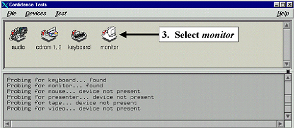

Operating Documentation
Direction 5133330-3, Rev# 14
Signa EXCITE HD 3.0T Service Methods
Module Version 1.0, Version Date 5/3/07
Operating Documentation |
| Required Persons | Preliminary Reqs | Procedure | Finalization |
|---|---|---|---|
| 1 |
| Condition | Reference | Effectivity |
|---|---|---|
Allow the monitor to warm-up for 20 minutes before performing any adjustments. | - | - |
The monitor should be positioned no closer than 16 inches and no further away then 28 inches from your eyes. The optimal distance is 24 inches for either of the monitors.
The response time for the LCD monitor is 100 ms. It is normal to see a “trail” on the screen if the mouse is moved quickly.
After the installation of the LCD monitor, the following adjustments must be performed:
Table 1:
| Auto Adjust Contrast | |
| Auto Adjust |  |
| Image Adjust |  |
| Position Control |  |
| AccuColorTM set-up |
| NOTE: | Manual Adjustment of the Position Control and Image Adjust H. Size/Fine controls may be required. |
To access the On-Screen Manager OSMTM, press
any of the control buttons  to get to the main menu. Refer to Section
10 for a description of the On-Screen Manager (OSMTM)
Controls for the NEC 2010X LCD color monitor.
to get to the main menu. Refer to Section
10 for a description of the On-Screen Manager (OSMTM)
Controls for the NEC 2010X LCD color monitor.
The LCD monitor adjustment process consists of two parts:
The first part involves making the course adjustments using the “Focus” background.
The second part involves using a SMPTE pattern to make finer contrast and brightness adjustments to ultimately satisfy the customers viewing needs.
From the Service Desktop click on the [C-shell] soft key at the bottom of the window.
In the Winterm window login by typing su<Enter> and then typing in the password operator<Enter>.
3. At the Winterm prompt type toolchest&. A GUI menu like that shown in Illustration 1 should, within 20 seconds, display on the screen. Make the selections as shown in Illustration 1, Illustration 2 and 5-4.
Illustration 1: TOOLCHEST MENUS

Illustration 2: CONFIDENCE TESTS MENU

TEST OPTIONS MENU
| TEST OPTIONS | |
| 100% white field | |
| 30% white field | |
| 10% white field | |
| Black field | |
| Focus | Select Focus |
| Gray scale | |
| Convergence | |
| VIDEO CONTROLS | |
| Red Video | on |
| Green Video | on |
| Blue Video | on |
| Invert Video | |
| Quit |
Once Focus is selected then the background will change to a pattern.
Press the middle mouse button to toggle the Test Options Menu off.
There should not be any visible variations (usually exhibited as alternating light and dark vertical bars) across the pattern of a properly adjusted monitor. If no variations are seen then skip ahead to section 6.
No finalization steps.